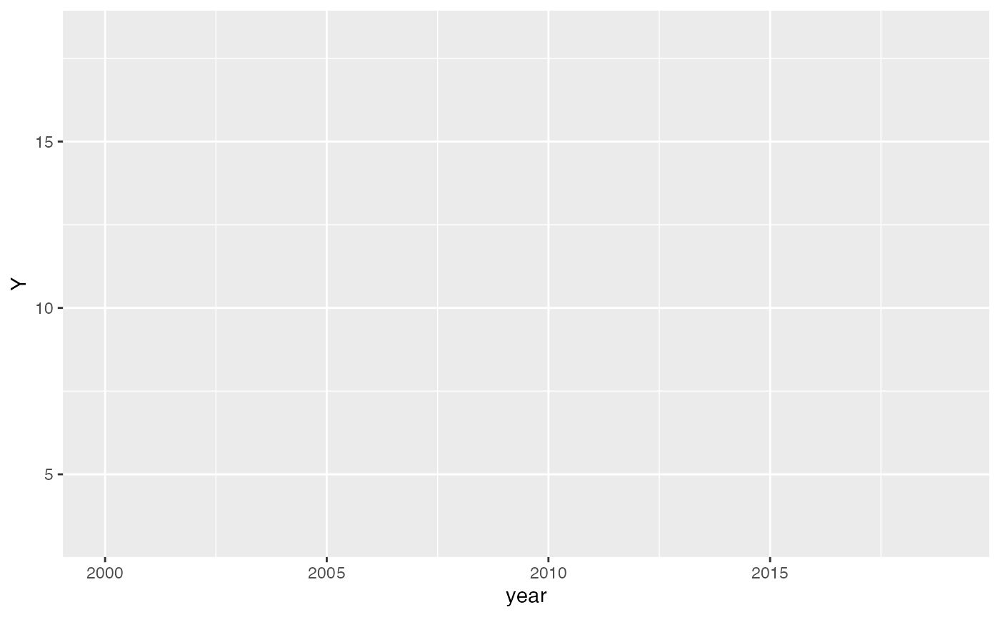
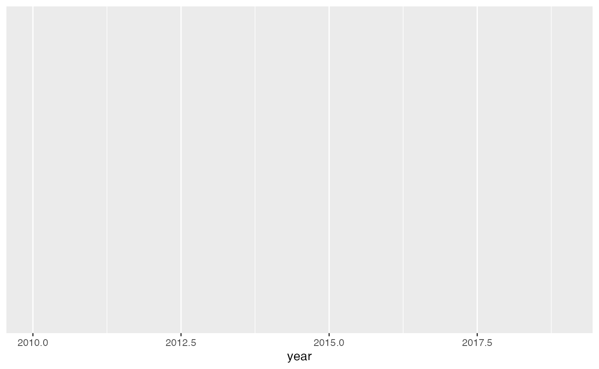

Synthetic Control Methods for Policy Evaluation
synthetic-control-methods.Rmd🧪 Synthetic Control Methods
Synthetic Control Methods (SCM) estimate the effect of an intervention by comparing the treated unit to a weighted combination of control units that best resemble it in the pre-treatment period.
1. ✨ Simulate Panel Data
set.seed(123)
n_units <- 10
n_years <- 20
unit <- rep(1:n_units, each = n_years)
year <- rep(2000:2019, times = n_units)
treated <- ifelse(unit == 1 & year >= 2010, 1, 0) # treatment begins in 2010 for unit 1
# Common trend + unit effects
alpha <- rnorm(n_units, 0, 1)
trend <- 0.5 * (year - 2000)
error <- rnorm(n_units * n_years)
Y <- 5 + alpha[unit] + trend + treated * 3 + error
df <- data.frame(unit = as.factor(unit), year, treated, Y)
head(df)## unit year treated Y
## 1 1 2000 0 5.663606
## 2 1 2001 0 5.299338
## 3 1 2002 0 5.840296
## 4 1 2003 0 6.050207
## 5 1 2004 0 5.883683
## 6 1 2005 0 8.7264372. 📈 Plot Treated vs. Controls Over Time
ggplot(df, aes(x = year, y = Y, group = unit, color = unit == 1)) +
geom_line() +
labs(title = "Treated Unit vs Controls Over Time", color = "Treated") +
theme_minimal()
3. 🧮 Synthetic Control with Pre-treatment Matching
Here’s a simplified SCM approach: match pre-treatment means.
df_pre <- df %>% filter(year < 2010)
df_post <- df %>% filter(year >= 2010)
avg_pre <- df_pre %>% group_by(unit) %>% summarise(mean_pre = mean(Y))
weights <- avg_pre %>% filter(unit != 1) %>%
mutate(weight = 1 / abs(mean_pre - avg_pre$mean_pre[1])) %>%
mutate(weight = weight / sum(weight))
synth_post <- df_post %>%
filter(unit != 1) %>%
left_join(weights, by = "unit") %>%
group_by(year) %>%
summarise(synth_Y = sum(Y * weight))
actual_post <- df_post %>% filter(unit == 1) %>% select(year, Y)
synth_df <- left_join(actual_post, synth_post, by = "year")4. 📊 Plot Synthetic vs. Treated
ggplot(synth_df, aes(x = year)) +
geom_line(aes(y = Y), color = "blue", size = 1.2) +
geom_line(aes(y = synth_Y), color = "orange", linetype = "dashed", size = 1.2) +
labs(title = "Synthetic Control vs Treated Unit (Post-2010)", y = "Outcome", x = "Year") +
theme_minimal()